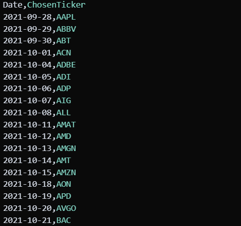

RADAR: Risk-Aware Dynamic Adaptive Returns
✖

RADAR learns per-stock regularized Sharpe q-scores, balancing exploration via trade counts using UCB-RSSR; ensures anytime average-cost compliance for observation-agnostic, capital-efficient portfolio adaptation, risk-managed, profitable growth.
GHOST: Graph-Harmonic Optimal Shaping Technique
✖
GHOST applies potential-based reward shaping to sparse-reward graph traversal. Harmonic, heuristic, and learned potentials guide Q-learning and DQN without altering optimal policies. Formal work proves policy invariance, analyzes finite-horizon biases, and establishes ε-optimality bounds. Experiments across diverse graph topologies showcase major sample-efficiency gains while exposing shaping failure modes comprehensively too.
The RL Hub (In progress)
✖
The RL Hub is a website that my friend Iman and I are developing as a valuable Persian resource for learning reinforcement learning from the ground up, with minimal prerequisites.
Additionally, the RL Hub features a Telegram channel for those who grasp the basic concepts but seek a less in-depth understanding.
RLHF-BMF: Bias Mitigation Framework (In progress)
✖

RLHF-BMF is an iterative model comprising a chain of RLHF model annotators, with RLHF models annotating each other in a chain, culminating in a final RLHF model annotated by a human.
IntersectNET: Traffic flow? Managed
✖

IntersectNet enhances traffic flow by modeling intersections with transition functions between lanes, generating matrices whose elements, determined through machine learning, optimize vehicle movement. This approach aims to streamline urban traffic efficiency through data-driven intersection management strategies.
AMPER: Adaptive Memory-Augmented Prioritized Experience Replay
✖
AMPER (Adaptive Memory-Augmented Prioritized Experience Replay) is a reinforcement learning framework where agents dynamically adjust experience replay buffer size and prioritization, employing memory-augmented neural networks to enhance learning efficiency and adaptability in non-stationary environments requiring long-term memory.
BURST: Bayesian Uncertainty-driven Reinforcement Sampling Technique
✖
Our method integrates uncertainty estimation into the action selection process of a Deep Q-Network (DQN) agent. The agent uses a Bayesian neural network to model the Q-function, providing both expected Q-values and uncertainty estimates for each action. The uncertainty estimates guide the exploration strategy.
Sentiment-STARity: Shopping Score Analysis
✖
Explore sentiment and star rating alignment in e-commerce reviews with Sentiment-STARity. Analyzing 82.83 million of Amazon product reviews to enhance shopping decisions through consistent rating evaluation.